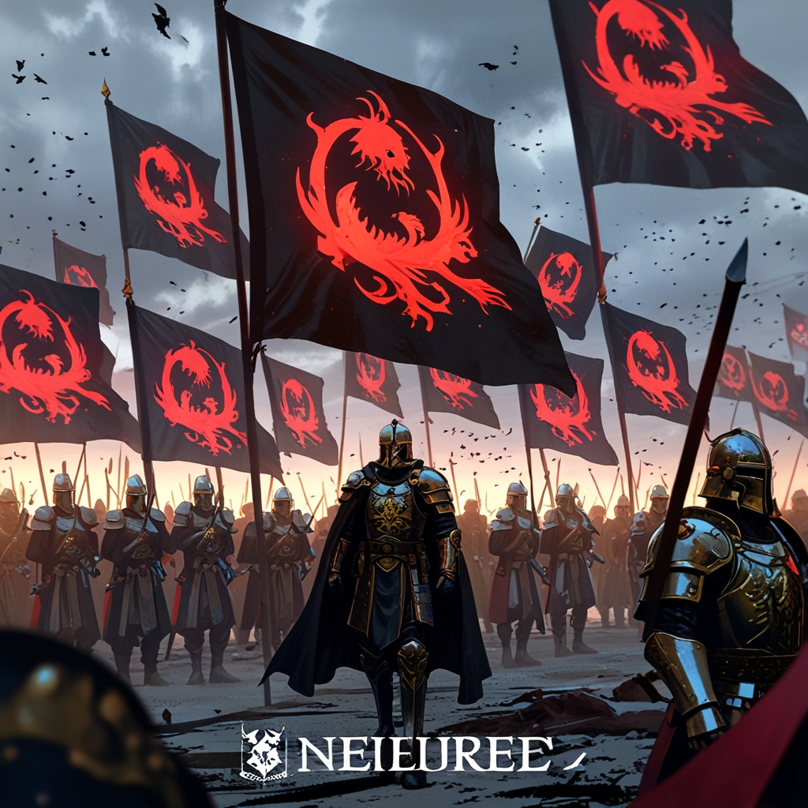

Embark on a journey through realms filled with love, fierce dragons, and the complexities of demons.
As a storyteller and artist, my passion for mythical creatures and the intricate tales that accompany them has driven me to create a unique world. My exploration began in childhood, captivated by stories of dragons and demons. Through sketches and digital art, I've brought to life the characters and landscapes that resonate within my imagination.
I am self-taught, continuously seeking inspiration from literature, folklore, and the natural world. Each piece is a reflection of my growth as an artist and a storyteller. My goal is to intertwine narrative and artistry, breathing life into the legends and myths that inspire us all.
My ambition is to push the boundaries of visual storytelling, merging art with technology. I aspire to create a space where every piece of art tells a story, encouraging others to find their voice in the world of creativity.
Explore My Work